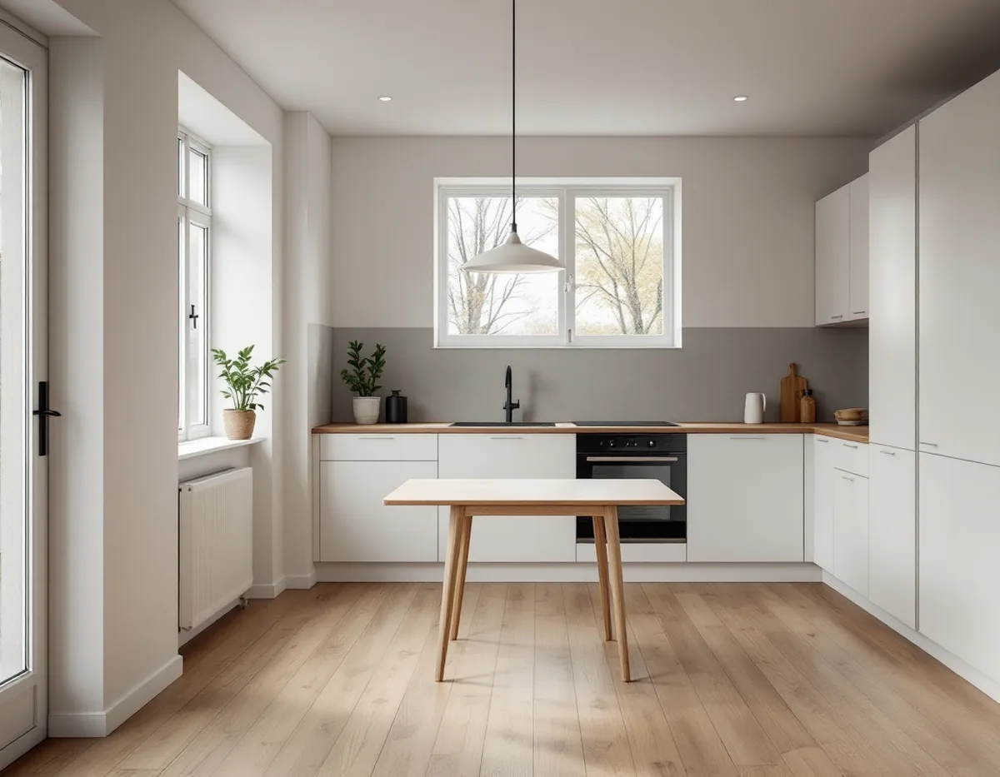
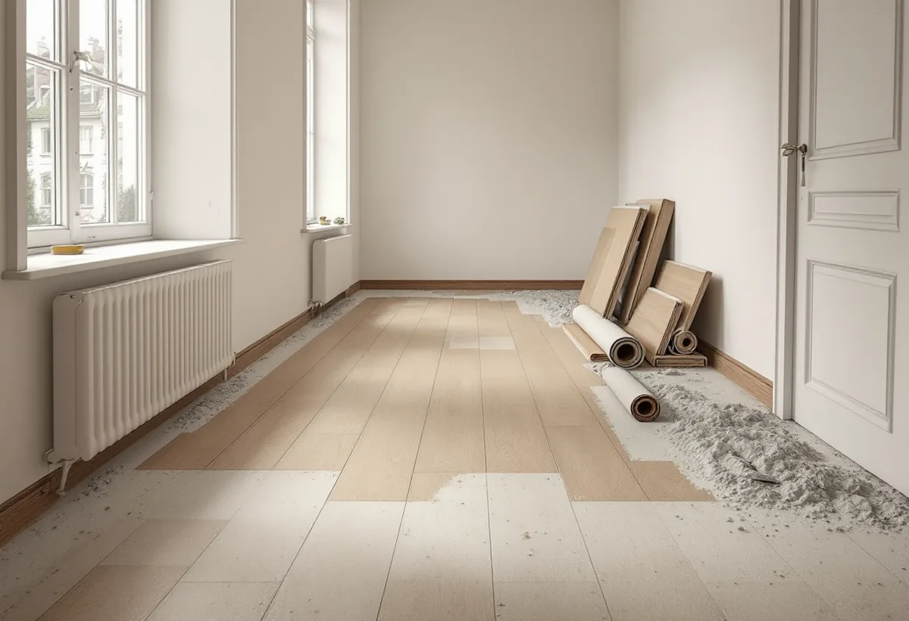

Hembesök
Vi tittar på golven, lyfter en list och ser vad som ligger under plastmatta eller laminat.
Huddinges villaområden domineras av hus från 1960-, 70- och 80-talen, ofta byggda i grupp av samma byggbolag. Golven i dem har nu tjänat länge, och plastmattan i hall och kök är en vanlig kandidat för byte. Geal Entreprenad AB lägger nya golv och slipar befintliga i hela Huddinge, med gratis platsbesök och skriftligt kostnadsförslag.

Huddinge kommuns kulturmiljöprogram beskriver hur villor under 1960-talet i större omfattning började byggas som grupphusområden, helt uppförda av byggbolag. Konceptet med ett nyckelfärdigt hus hade skapats, och husen byggdes oftast prefabricerat med färdiga byggelement som monterades ihop på plats. Under miljonprogrammets år, 1965–1975, uppfördes i landet som helhet en tredjedel av de nya bostäderna i småhus och grupphus, men i Huddinge blev andelen flerbostadshus större.
Programmet visar också hur bostadsbeståndet förändrades. Fram till 1960-talet var omkring 70 procent av Huddinges bostäder småhus, men mellan 1960 och 1975 sjönk andelen till 33 procent när många flerfamiljshus byggdes. På 1970-talet anpassades villorna enligt programmet för en växande medelklass, med större hus av högre standard än egnahemsrörelsens enkla småhus.
Att husen i ett område är byggda lika gör det lättare att förutse vad som ligger under golvet. Ändå kontrollerar vi varje hus för sig, eftersom ägare genom åren har byggt om på olika sätt.

Skatteverket nämner uttryckligen att byta plastmatta mot trägolv som ett exempel på förbättringsarbete i småhus, och det ger rotavdrag på arbetet. Under den gamla mattan finns ofta lim och spackel som måste bort eller jämnas ut, så att det nya golvet får ett plant och fast underlag.
Ligger mattan på betong vill vi veta hur torr betongen är innan trä läggs. Golvbranschen varnar för att fukt som stängs in mellan betong och golvmaterial kan bryta ned lim och golv och ge emissioner till inomhusluften. Ligger den på träreglar och skivor kontrollerar vi i stället att skivorna sitter fast och inte sviktar.
Som en motreaktion mot de storskaliga flerbostadshusen byggdes radhus runt om i Huddinge under slutet av 1970-talet och början av 1980-talet. Kulturmiljöprogrammet nämner Sörskogen söder om Huddinge centrum och Utsälje vid Snättringe som exempel. Även Östra Skogås fick terränganpassade småhus, trots att området först var tänkt för flerbostadshus.
I ett radhus på två plan är det ofta smidigast att ta ett plan i taget, så att familjen kan bo kvar. Övergångarna mot trappan och mellan rum med olika golvmaterial planeras innan arbetet börjar. Ska väggarna målas samma gång gör man det före golvet – se målare i Huddinge.
Reparation och underhåll ger rotavdrag oavsett husets ålder. För ombyggnad och förbättring gäller däremot att avdrag inte medges under de första fem åren efter husets värdeår. Skatteverket anger också att material som byts i ett småhus som är yngre än fem år ska ersättas med likvärdigt. Är huset nybyggt kan ett golvbyte alltså hamna utanför avdraget, och det är bra att veta innan offerten jämförs. Mer om golvtyper finns under golvläggning.
Många grupphus har redan bytt golv minst en gång, och då ligger det ofta laminat eller en tunn parkett i vardagsrummet. Laminat går inte att slipa, och en parkett med tunt slitskikt tål sällan mer än en lätt slipning. Är ytan sliten är ett nytt golv därför ofta det rimliga.
Ett flytande golv som ligger på en underlagsduk kan i regel tas bort utan att underlaget skadas. Ligger det nya golvet på samma nivå som det gamla behöver trösklar och dörrar inte ändras. Vi kontrollerar planheten och om underlaget sviktar innan något beställs.
Vill du ha ett golv som kan slipas om i framtiden är massivt trä eller en parkett med tjockt slitskikt ett alternativ till nytt laminat. Materialvalet påverkar både kostnaden och hur många gånger golvet kan fräschas upp, och det är en avvägning vi gärna går igenom vid besöket.
Vi tittar på golven, lyfter en list och ser vad som ligger under plastmatta eller laminat.
Vi föreslår golv efter hur rummen används, och om något lager kan ligga kvar.
Du får arbete, material och rivning redovisat var för sig, så att ROT-delen syns.
Mattor, lim och gamla lister tas bort och underlaget görs plant och fast.
Golvet läggs, och trösklar, trappnosar och lister monteras.
Vi går igenom resultatet och tar med oss spillet.
Att slipa och byta golv i ett småhus räknas som rotarbete, och bytet från plastmatta till trägolv räknas som förbättring. Avdraget är 30 procent av arbetskostnaden, högst 50 000 kr per person och år och högst 75 000 kr tillsammans med rutavdrag.
Material, utrustning och resor ingår inte. Betalningen ska göras elektroniskt, till exempel med kort, Swish eller banköverföring, och Geal drar avdraget direkt på fakturan.
Hur många lager som ska rivas, hur mycket lim och spackel som måste bort och om underlaget behöver jämnas ut påverkar mest. Därefter kommer golvmaterial, antalet rum och övergångar, och om trappan ska få nya nosar. Platsbesöket är gratis och du får ett skriftligt kostnadsförslag.
Parkett, trägolv, klinker och slipning.
Golvläggning i Stockholm →Takbyte, takbesiktning och plåtarbeten.
Takläggare i Huddinge →Stuvsta, Snättringe och Skogås.
Takrenovering i Huddinge →Från sportstuga till grupphus.
Badrumsrenovering i Huddinge →Altan, dörrar och snickerier.
Snickare i Huddinge →Panel, puts och isolering.
Fasadrenovering i Huddinge →Grannar, tomtgräns och lovärendet.
Byggföretag i Huddinge →Nytt trä i en gammal fasad.
Fasadmålning i Huddinge →Egnahem, grupphus och 70-talsvillor.
Fönsterbyte i Huddinge →Okopplade bågar, tätning och lagning av bottenstycken.
Fönsterrenovering i Huddinge →Slipa golvet och byt ytbehandling.
Golvslipning i Huddinge →Grupphus, egnahem och stugor.
Köksrenovering i Huddinge →Rännor, dagvatten och brutna tak.
Plåtslagare i Huddinge →Tyngre tak, stugor och landsbygd.
Takbyte i Huddinge →Ny tapet på lagad spännpapp.
Tapetsering i Huddinge →Råd för tre epoker av småhus.
Tillbyggnad i Huddinge →Rekordårens hus inifrån och ut.
Totalrenovering i Huddinge →